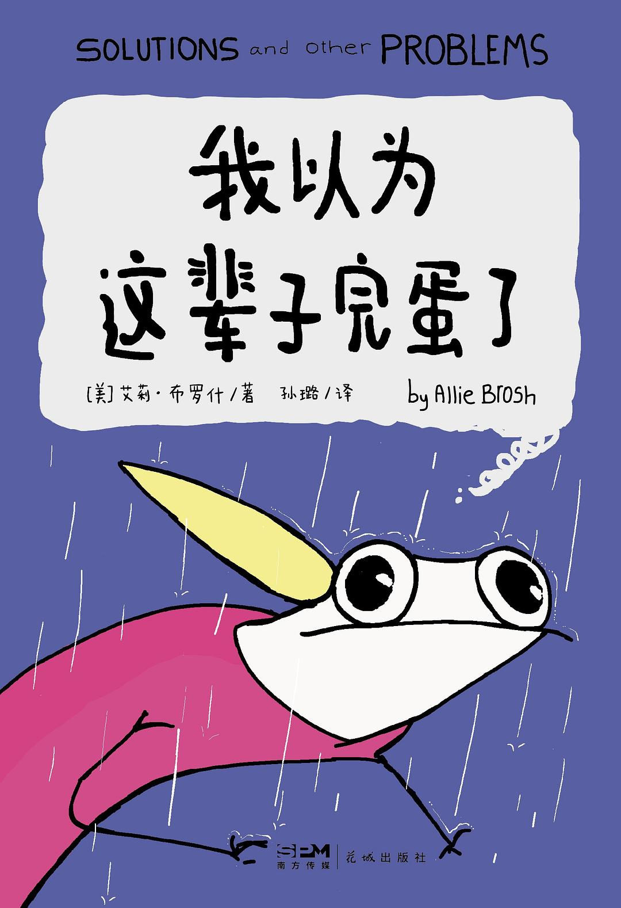

我以为这辈子完蛋了
📌 书籍摘录
作为一条狗，一条头脑复杂程度低于平均水平的狗，你不明白这只是你撞上椅子之后可能会出现的后果。椅子—它没有神经系统—是无法主动攻击你的。在你看来，椅子肯定是故意的。[插图]就这样，你对椅子产生了永久的恐惧，而椅子竟然不会因此受到任何惩罚或限制。[插图]你没法质疑这个结果，也不能去问袋鼠猪，为什么它看到了椅子的所作所为，还会允许如此暴力的家伙住在房子里。你只能无助地旁观，期盼椅子的暴力行径不会变本加厉。[插图][插图][插图]宠物的生活就是这么难，不断遭受着看护人一手造成的、来自各个角度的、看似疯狂的攻击。[插图]幸运的是，动物的心理素质强悍，精神抗压能力跟拖拉机不相上下。我们几乎可以对它们为所欲为，无论你有什么企图，它们都会做出积极的回应：好吧，试试就试试，感谢您搭理了我。[插图]但我们并没有止步于此。我们不满足于只是让它们坐在那里，被动地接受一团混乱的生活真相。不—我们还希望它们参与其中。[插图][插图][插图][插图]直到看了一段兔子参加“敏捷比赛”的视频，我才意识到这个现象的普遍性。我不确定兔子知不知道自己在比赛，反正在场的人类都知道，他们为兔子加油，玩得很开心。[插图]那只兔子看起来还挺自得其乐，这是我没有料到的。按理说这种比赛势必会引发它的困惑。它们就这样度过了一生。满腹疑问，不明就里，不得怜悯。
我认识的人也会看到这些片段—甚至会在不经意间出镜。这可不是那种你会因为参与其中感到光彩的事儿。在我的白日梦里，就算处理得当，这些被迫充当配角的熟人也难逃人格受到隐晦侮辱的厄运。假如处理得不好，他们甚至会在镜头里变成满足我精神自负的玩偶，反复说出他们在现实生活中打死也不会认同的台词。 跟我在白日梦里“合作”的一部分演职人员会觉得受到了严重的冒犯，还有人会觉得遭到轻视，但绝对没有人会说：“没错，你编排得很好，我很喜欢你在剧里面对我的刻画。”[插图]从这些情节中，不难看出我在恐惧些什么，以及要让我相信自己很伟大是件多么容易的事。 可我停不下来。既然已经把自己想象得无所不能，怎么可能自动走下神坛，这岂不是毁灭性的打击？我是一只充满悲剧色彩的贪婪野兽，有着太多的梦想，无法满足于现实。我想体验所有称得上“酷”的事情。我想骑着龙去战斗。我想变得重要。我想知道，如果包括瑞恩在内的每一个人都相信我，会是什么样的感觉。我想成为高难度斗舞比赛和数学竞赛的冠军，为人类赢得奇迹般的胜利。我想像角斗士一样勇敢。我想像神明一样强大。[插图]我不知道在真实的世界里，要怎样才能做到这一切。即便有可能，大概也很难。 假如真是这样，就没有人会觉得我的表现有多震撼了。[插图]所以我得坚持下去。
这很可笑。不管你有多生气，都无法阻止别人买香蕉—不可能真正做到，要是他们非去买，你也没辙。我觉得我们同时意识到了自己的荒谬，不仅仅是因为这件事—在那一刻，我们意识到自己是如此愚蠢、较真、疯狂又渺小的动物，会在拼命阻止对方买香蕉这种事上白费力气。[插图]我们再也没有为香蕉争论过。毕竟，谁也不想在怒火中烧的时候，和自身的荒谬性撞个满怀。
很遗憾，这个世界没有道理。就是没有。至少并非一切都讲道理。假如继续探究下去，你会发现越来越多毫无道理的事物。这跟努不努力没关系。事实上，你越努力，世界就越没道理。一旦你开始注意到这一点，它就会像塔斯马尼亚旋风章鱼那样摧毁你，挥舞它强大的腕足，把你脑子里那些愚蠢又渺小的意义感统统扯碎。
那种感觉……特别糟糕。并且，那种糟糕的体验没有尽头。一旦有机会向愿意倾听的人解释这一切，那种彻彻底底怒诉一番的冲动，实在难以抵挡。倾诉的感觉很好—就好像找到一个出口，好像，只要你真的能把一切都解释清楚，这些经历就会意识到你已经走了出来，不再来打扰你。现实不会如我所愿，但万一呢！我还是很想倾诉一下—说说我的空虚、不知所措，还有从梦中惊醒的幻灭。我甚至有点想描述一下那个我无法停止想象的、火车撞击到她的画面。不仅仅是描述—我还要给你画出来。如果要绝对坦诚的话，我真正想做的是把这一切都画出来，然后当面展示给你看，以免有任何可能，你我脑海中的画面并不相符。我想说说那天我回到家时，爸爸拥抱我的力气有多大；他哭得有多伤心；当我意识到自己要承担起带领全家的重任时，我有多害怕。我完全没做好这样的准备，但总得有人去做，对吧？得有人在公众场合为自己的家人说话。我的父母突然之间变得特别无助与渺小，没有办法再保护这个家。所以我猜这个挺身而出的人只能是我。
后来，一位熟人找到我们，说他有一些草药可以帮助我缓解情绪波动。我解释说，我只是为妹妹的死感到难过—她前两天还活得好好的，现在却没了，想到这里，再看到最后一张幻灯片，我突然就崩溃了……他温和地指出，当时我哭得比谁都大声。这让我既觉得安慰，又感到惭愧。我很想仔细说说，死亡是多么让人手足无措，不得解脱。它总是默默坐在那里，迫使你内疚、懊悔。我想说说它是怎样一个岔路口，说说我对妹妹最后时刻的想法有哪些猜测。你知道吗，我现在依然能梦见她，只是梦里的她变得有些不一样了。
有时候，你只能继续往前走，祈祷自己最终能找到一丁点道理。
不知道松鼠和老鼠未来会怎样，但他们一定能找到办法走下去。他们太需要彼此了，容不下任何东西插足这段关系。
不知为什么，我奶奶还在拍。我和鱼朋友已经越过了可爱和悲惨的临界点，海滩上的其他人开始表现出不自在了。我妈察觉到了其中的微妙，试图结束这场闹剧。[插图][插图]突然，镜头拉远，我和沙丁鱼变成了小黑点。时间快进到未来，两岁的小孩变成了重度抑郁的大人，刚刚参加完妹妹的葬礼，正坐在爸妈家里，一个人黑灯瞎火地观看这段视频。这盘录像带是在车库的一个箱子里找到的，当时我心想：嘿，我知道什么能让我振作起来了！一段我灰暗生活开始前的录像！然后，我就看到了这段当头棒喝一般的存在主义悲剧……[插图][插图]……没有一丝丝防备。它用一种天真的不经意的手法告诉我，一切的一切都是怎样一场徒劳。[插图][插图][插图]而我无比绝望地感同身受。
我同样要向罗伯特·刘易斯·梅道歉，但他的故事显然也经不起推敲。这个故事教会了我们跟同龄人相处的什么道理呢？“坚持住，孩子—也许以后会出现一些极端的巧合，你的缺陷恰巧成了解决某个难题的关键，每个人都会因为你很有用处而勉为其难地接受你。”是这样吗？如果这样的巧合一直不出现，我该怎么办？如果我永远丑陋无用，又该怎么办？我或许并非讲故事的最佳人选，但有时候，如果你期待世界有所变化，你必须成为那个变化本身。如果你无法满足众人眼中的美丽标准，也许退而求其次的办法，是听一个关于动物的故事。[插图]亲爱的孩子们：[插图]很久很久以前，有一只丑陋的青蛙。[插图]没错，它是世界上最丑的青蛙。[插图]但—[插图]为什么故事里不管出来个什么，都得是世界上最糟糕的？比较是我们人类的天性，不需要为此感到自责，但我们至少应该意识到，看见一只青蛙就自以为知道它在“世界青蛙排行榜”上排在第几位，是多么愚蠢的一件事。为什么我们甚至要有这样一个排行榜呢？它们就是青蛙。放过它们吧。
老实说，跟自己做朋友，有时候就像试图和野生蜥蜴交朋友一样艰难。但是，请保持耐心。假如你已经孤独到能跟这样的人交朋友，那么对方大概也非常孤独，只能和你建立友谊。
尴尬发生的那一刻，其实代表人们在那时刻，有着自我暴露的愿望和冲动，而尴尬是对这种愿望和冲动的压抑和防御。
1